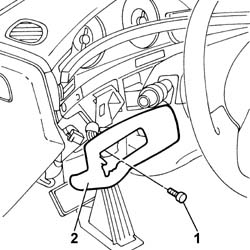

7040A64 TRIM for exterior light switches and instrument panel light dimmer - R.R.
- Path
- Procedures > 70 FITTINGS > 7040 BODY INTERIOR UPHOLSTERY AND TRIM > 7040A PASSENGER COMPARTMENT TRIMS > 7040A64 TRIM for exterior light switches and instrument panel light dimmer - R.R.
- Kind
- repair procedure (removal / refitting; the operation number is the code)
- Applies to
- all engines; all production periods
- Interactive page
- https://sloeber94.github.io/elrnDB-lThss/en/#/126602
Applies to: all engines; all production periods
 Removing
Removing
 Refitting
Refitting- Open the boot and disconnect the negative battery terminal.
- Release the section of the moulding in the dashboard by the surround from the retaining springs.
See in Op. 5540A20 Exterior lights SWITCH PANEL and instrument panel light dimmer - R.R.
-
1. Undo the bolt fixing the trim.
- Release it from the retaining springs.
2. Remove the trim.

Applies to: all engines; all production periods
Refitting
Removing- Secure the trim to the retaining springs.
- Fasten the trim to the dashboard tightening the fixing bolt.
-
- Secure the section of the moulding by the surround to the dashboard.
- Connect the negative battery terminal.